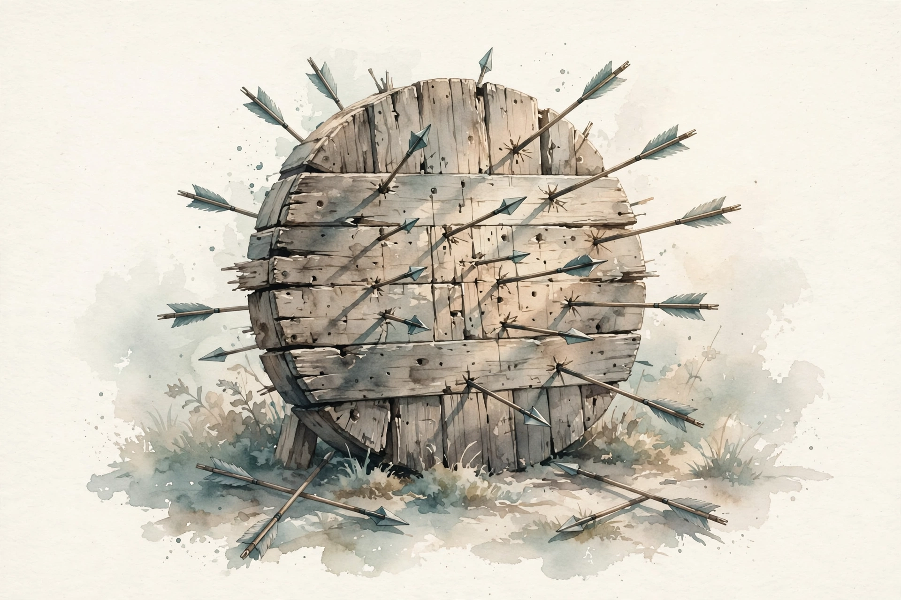

Clearer Thinking with Spencer Greenberg · Episode 4
Beyond Cognitive Biases: Improving Judgment by Reducing Noise with Daniel Kahneman
Spencer Greenberg talks with Daniel Kahneman about the other half of error: why two judges give the same criminal sentences four years apart, why a model of a judge beats the judge, and how to wash your decisions clean.

Illustration. AI-generated watercolor made for this page: the target from behind. You cannot see the bias, but the noise is obvious.
Video. The full episode on YouTube.
~00:02
Judgment Is Measurement
Source fact Kahneman opens with a frame shift. Judgment is an operational measurement: an object, a scale, and a value assigned on the scale. A diagnosis, a sentence, a hire-or-fire call, all of these place an object on a scale. The measuring instrument is not a ruler. It is a human mind.
Judgment is measurement.
Daniel Kahneman · Episode ~00:03
Source fact Measurement theory, a little over 200 years old and associated with Karl Friedrich Gauss, splits error into two parts. The average error is bias: the ruler that reads long. The variability of errors is noise: the scatter. The total error follows a remarkably simple formula: error equals the square of the bias plus the square of the noise. The two terms are, in principle, equally important.
Source fact Thinking, Fast and Slow covered the bias term. The new book, Noise, covers the second term. Kahneman spent most of his career on bias and, by his own account, completely neglected the variability of judgment. The book exists because noise is the half of error nobody watches.
Nugget 1 · Error
Error has two terms, and you watch only one
What happened. Two centuries of measurement science say total error is bias squared plus noise squared. Judgment research spent decades on the first term and almost none on the second.
Why it matters. Everything you know about debiasing leaves half the error untouched. Noise is the neglected term with the neglected payoff.
The principle. When you audit a decision process, measure the scatter, not just the tilt.
Try it: the error equation
Total error equals bias squared plus noise squared. Move the sliders and watch which term dominates.
~00:10
The 208 Judges
Source fact Biases feed both terms of the equation. Some judges are harsher than others, each with their own bias, and the variability of those biases across judges is itself a source of noise. Then comes the study that anchors the book: 208 federal judges were shown the same 16 detailed criminal cases and asked to set sentences.
Source fact The variability was, in Kahneman word, horrendous. For a crime with an average sentence of seven years, two judges picked at random would differ by about four years. A defendant faces a lottery. Some of it is level noise: Southern judges run more severe than Northern ones. Some of it is pattern noise: one judge is especially severe on fraud, another on violence against the elderly. Pattern noise, the biggest source, comes from judgment personalities: different minds see the same case differently and do not know it.
The sentencing lottery
Average sentence 7 years. Two random judges differ by about 4 years. Distribution illustrative.
Source: Clearer Thinking, Daniel Kahneman episode, ~00:12. The 208-judge study, 16 cases, 7-year average, and 4-year gap are stated figures. The curve shape is illustrative.
Nugget 2 · Justice
The four-year lottery
What happened. Identical cases drew sentences four years apart depending on which judge the defendant drew. Level, pattern, and occasion noise all fed the gap.
Why it matters. Equal cases deserve equal treatment. Noise in justice is not inefficiency. It is unfairness wearing a robe.
The principle. Wherever humans speak for a system, check whether they speak in one voice.
~00:16
Occasion Noise
Source fact Noise also lives inside a single judge. Show a radiologist the same X-ray on another day and you may get a different diagnosis. Judges are more severe on hot days. Physicians prescribe more antibiotics and opioids in the afternoon than the morning, because they are tired and more likely to assent to whatever the patient asks. The defendant lottery includes the judge mood that day.
Source fact So there are three noises: occasion noise within a person across times, level noise in overall severity across people, and pattern noise in how different people weight different aspects of a case. Pattern noise is the largest, and the strangest: each of us is convinced we see reality as it is, and expects others to see it the same way, while inside other heads the scene looks quite different.
Nugget 3 · Variability
You are noisier than you think
What happened. The same expert, the same case, a different day: a different answer. Heat, fatigue, and mood all vote.
Why it matters. We audit our biases and ignore our weather. A decision made at 4 p.m. is a different decision.
The principle. For important judgments, fix the occasion: rested, cool, and structured, or do not judge.
~00:20
The Archery Lesson
Source fact Spencer offers the archery metaphor and Kahneman builds on it. Tight cluster on the bullseye: accurate. Tight cluster off-center: bias, with a causal story like a bent gunsight. Wide scatter centered on the bullseye: pure noise. Wide scatter off-center: the usual human condition, both at once.
Source fact Then the kicker: look at the target from behind. You cannot see the bullseye, so you know nothing about bias. But the scatter is fully visible, so you know everything about noise. In an organization, you can audit noise among forecasters without knowing the truth, because you only need the variability. Noise is much easier to measure than bias.
Noise is actually a lot easier to measure than bias.
Daniel Kahneman · Episode ~00:22
Nugget 4 · Measurement
Audit the scatter, skip the truth
What happened. The back of the target reveals noise with no need for the bullseye. A noise audit just compares judges to each other.
Why it matters. Bias audits stall on what is true. Noise audits start immediately, and less noise is always better.
The principle. Run the noise audit first. It needs no ground truth, only the courage to compare.
~00:24
The 52 Percent Surprise
Source fact The book began seven years ago at an insurance company. Kahneman had 50 underwriters price the same realistic complex case. He asked the executives: pick two underwriters at random. By how much will their premiums differ? The universal answer, from executives and audiences alike: 10 percent. The measured median difference: 52 percent. Five times the expected noise.
Expected noise versus measured noise
Fifty underwriters, one case. Everyone guessed 10 percent.
Source: Clearer Thinking, Daniel Kahneman episode, ~00:25. The 10 percent expectation and 52 percent median are stated figures.
Source fact Everyone knows judgments are imperfect. Reasonable people disagree by definition. What nobody expects is the size of the scatter. Spencer adds a personal version: routine medical cases draw consistent opinions, but obscure ones draw wildly different ones. Kahneman agrees: difficult, multi-aspect judgments are where noise lives, and the important problems are nearly all difficult.
Nugget 5 · Surprise
Expect noise. Then multiply by five.
What happened. Professionals who live inside a judgment system guessed its noise at a fifth of reality. The error was not in the judging but in the imagining.
Why it matters. You cannot fix a problem sized at 10 percent when it is 52 percent. Calibration precedes correction.
The principle. Before reforming any judgment process, measure its noise. Expect to be shocked.
~00:30
Machines Do Not Wobble
Source fact Seventy years of research pit human judges against simple mechanical rules, and the rules win or tie in about 50 percent of comparisons. The reason is one word: people are noisy and rules are not. Show an algorithm the same profile twice and it answers identically. No human does that, within or across people.
Source fact The sharpest result: train a model not on the truth but on one judge predictions, and the model can beat the judge at predicting outcomes it never saw. The model is a noise-free copy of a noisy original. Machine learning extends the same logic: it averages masses of human-labeled data toward the noise-free center.
Source fact On fairness, Kahneman is candid. Some past algorithms were biased by design, like predicting crime from arrest counts that already encode policing bias. That bias is detectable and fixable. The subtler issue is differential accuracy from differential data, like face recognition trained mostly on white faces. His net judgment: the bias is controllable, and the algorithms still come out ahead. Spencer adds the mirror argument: humans systematize bias too, it is just the kind you cannot measure, which people find comfortable.
Source fact The resistance is human. Judges hate sentencing algorithms, hate guidelines, hate constraints. When guidelines were removed, noise returned and judges were happier. On the hybrid question, Kahneman recalls Garry Kasparov post-Deep Blue advocacy for human-plus-computer chess teams. Kasparov was briefly right, then wrong: the software stopped needing the human, which got in the way. When human and machine hold comparable information, Kahneman conclusion is blunt: the computer should have the last word.
Nugget 6 · Automation
A noise-free copy beats the original
What happened. A statistical model of one judge outperforms that judge, because it keeps the judge signal and drops the judge wobble.
Why it matters. You do not need superhuman insight to beat humans. You only need to stop rolling the dice between readings.
The principle. Wherever judgment repeats, replace the judge with a model of the judge first, and argue about bias second.
~00:42
The Limits of Predictability
Source fact Algorithms have a ceiling: the predictability of the environment. The Fragile Families study, published in the Proceedings of the National Academy of Sciences, asked how well life events can be predicted from the variables sociologists collect. With hundreds or a thousand data points per child, 160 experts competing, the best models moved accuracy from a 50 percent coin flip to 55, 56, 57 percent. That is the limit, not the start.
Source fact Spencer suggests chaos-theory reasons: one chance meeting with the wrong crowd reroutes a life, and no dataset records the day it happened. Kahneman agrees the missing information is real-time: who the child is with today, which no survey captures. Hiring has the same ceiling: most of what determines job performance does not exist yet at hiring time.
Nugget 7 · Limits
Some ceilings are real
What happened. One hundred sixty experts, a thousand variables per child, and the best prediction barely beat a coin flip. Life events are mostly noise no model can remove.
Why it matters. Chasing accuracy past the predictability limit wastes money and trust. Know the ceiling before you buy the ladder.
The principle. Ask what the best possible predictor could know. If the answer is not much, stop tuning.
~00:48
Decision Hygiene
Source fact Hygiene, not medicine: hand-washing works without knowing which germs you killed. Decision hygiene is the same idea for noise. The flagship procedure is the mediating assessments protocol. In hiring, define the attributes that matter, evaluate each one separately and independently, and delay the global judgment until every attribute is scored. Unstructured interviews do the opposite: an impression forms in two or three minutes, and the rest of the hour confirms it.
Source fact The same protocol fits any choice: treat each option like a candidate, score its attributes independently, delay intuition to the end. A second procedure is simply more judges: averaging keeps bias exactly as it was and shrinks noise, 100 judges cut noise to a tenth, so accuracy must improve. That is the non-intuitive payoff of the error equation.
Source fact But groups contaminate. Whoever speaks first anchors the room, confidence persuades more than correctness, and people edge toward each other to avoid conflict, so the true spread never surfaces. Spencer adds the false-consensus effect: the quiet dissenters leave everyone thinking all agreed. Worse, agreement polarizes: groups that lean one way end up more extreme than their average, because extreme agreement gets rewarded. Kahneman cites jury research with collaborators, more than 20 years old, on punitive damages: severe-leaning juries punished more severely than their initial average.
Nugget 8 · Procedure
Separate, then judge. Never together.
What happened. Interviews, meetings, and juries all let early impressions and loud voices contaminate independent judgment. The fix is structure: attributes scored alone, intuition delayed, votes taken before discussion.
Why it matters. Averaging only kills noise if the judgments are independent. One shared conversation can make ten judges worse than two.
The principle. Collect judgments in isolation. Discuss after the numbers are locked.
~00:58
Why We See Bias and Miss Noise
Source fact The neglect of noise is a property of the mind. We think causally, in stories about single cases, and bias looks like a cause pushing a judgment. Noise is statistical: invisible in one case, visible only across many. We are built for causes, not for distributions.
Source fact Stories exploit the same gap. We understand the world as an unfolding narrative: we can never predict the next line, yet nothing surprises us. That ease of hindsight breeds false confidence in foresight. The bad hire looks obvious after the fact, I missed that sign, while the five other plausible explanations go unexamined. We are much better at explaining the past than predicting the future, and the explaining feels like predicting.
Nugget 9 · Mind
Explanation feels like prediction
What happened. Hindsight turns every outcome into a story that makes sense, which we mistake for evidence of foresight.
Why it matters. The confidence that fuels the next judgment is counterfeit. It was minted after the fact.
The principle. Distrust any lesson that arrived only after the outcome. Ask what you predicted before it.
~01:03
The Crowd Within
Source fact Unique events still carry noise, even though you cannot measure it in one shot. Kahneman offers two handles. First, imagine people like you, with your knowledge and values, and the range of judgments they would make. Their average is probably more accurate than yours. Second, the constructive one from his collaborator Olivier Sibony: a unique event is a repeated event that happens only once. The procedures that cut noise across people also cut it in single cases.
A unique event is a repeated event that happens only once.
Olivier Sibony, via Daniel Kahneman · Episode ~01:04
Source fact Spencer adds his favorite trick from the book: average your own judgments across time. Judge, then run a premortem, suppose this judgment turns out badly, what is the most likely reason, adjust, and average the two. Kahneman confirms it works, at about one third the value of asking another person, because your own range is narrower than the range across people.
Nugget 10 · Self
Ask yourself twice, average once
What happened. Two judgments from the same head, separated by a premortem, average into something better than either. The crowd within is worth a third of a real second opinion.
Why it matters. You cannot always convene 100 judges. You can always judge twice.
The principle. For one-shot decisions, make the call, argue against it, then split the difference.
~01:08
Lightning Round
Source fact On individual debiasing, Kahneman is skeptical. Half a century studying judgment, and he does not think he improved much himself. Knowing about biases does not immunize you. Organizations can install procedures. Individuals mostly cannot sustain the discipline. Spencer frames the four-step ladder, notice the pattern, want to change, know a strategy, execute it, using the planning fallacy and reference-class forecasting as the model case. Kahneman agrees hygiene helps for important decisions, but calls it what it is: disciplined thinking, not a cure.
Source fact On the replication crisis, he is optimistic. The sexy, surprising findings failed to replicate at scale, but psychology adopted larger samples, preregistration, and full reporting, which cut self-deception, the real culprit. Fraud remains, but rarer and riskier. Spencer is more cynical: the advantage of publishable fakery over real discovery just moves elsewhere. Kahneman answer: procedures cannot kill fraud, but they starve self-deception, and self-deception was the crisis.
Source fact On idea generation, there is no method, only recognition. Good ideas arrive vague. The skill is to notice the glimmer and select among the many. His work with Amos Tversky was magical because Tversky understood each vague idea better than Kahneman did. The ideas themselves were often common sense the discipline ignored: losses weighing more than gains was something grandmothers knew, but grandmothers could not generate testable consequences from it.
Source fact On irrationality, he pushes back hard. He never uses the word. Rationality is a technical term from decision theory. Full rationality is infeasible for anyone, so calling people irrational says nothing. His work shows people are not fully rational in the economists sense. That is very different from unreasonable. Most judgments are correct. The errors are systematic and worth studying.
Source fact On Bayesianism, he endorses the norm. The strength of evidence is the likelihood ratio: how much more likely is this evidence if the hypothesis is true than if it is not. The rules for changing your mind in light of evidence are, in his words, unavoidably correct, even if applying them is technically hard.
Source fact The episode also carries a sponsor segment for the Uplift app and an intro note about a Thought Saver flashcard deck built from the episode takeaways.
The episode in eight lines
- Total error is bias squared plus noise squared. You audit only the first.
- The same case drew sentences four years apart. That gap is the lottery.
- Heat, fatigue, and afternoon all vote. Fix the occasion or do not judge.
- You can measure noise without knowing the truth. Run the audit.
- A model of the judge beats the judge. Noise-free wins.
- Predictability has a ceiling. Stop tuning past it.
- Score attributes separately, delay intuition, vote before discussion.
- Judge twice and average. The crowd within is worth a third of a colleague.
Distilled from Clearer Thinking, Beyond cognitive biases: improving judgment by reducing noise with Daniel Kahneman, 2021 podcast release, YouTube re-upload March 2023. Full episode: youtube.com/watch?v=bEiQw3Mk0rI. Times marked ~ are proportional estimates from word position.
Nugget index
- Error has two terms, and you watch only one
- The four-year lottery
- You are noisier than you think
- Audit the scatter, skip the truth
- Expect noise. Then multiply by five.
- A noise-free copy beats the original
- Some ceilings are real
- Separate, then judge. Never together.
- Explanation feels like prediction
- Ask yourself twice, average once